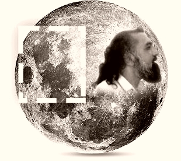

Who is Gohar Shahi
Gohar Shahi is the most awaited personality . Every
religion have given Gohar Shahi different names , and teached its
follower to wait for His Arrival.
Muslims ⇥ Imam Mehdi
Christian ⇥ Final Savior
jews ⇥ Messiah
Hinduism ⇥ prem Avator
These religion also predicted that His Picture will be visible on
Moon

He is the Person who came to Earth to save human, Give them the
Knowledge of GOD which they were seeking for million of years.
Hundred of Thousands Died in search of GOD, Thousands get Lost in way to
GOD, Thousands of Human Spent their Life's in Mountains, Forests, and
Left every thing of their lives, to Know God , to Get a single view of
GOD.
Now In this era , Trillion of Dollor are being spent by Curious
Souls(Scientist) , from reading structure of Atom to Reaching Stars.
Finding the Entity Who is Behind this All Gigantic Universe. Still No
one of These Souls have Ever seen a glimpse of GOD .
But Why
This was the Question Which
Gohar Shahi Answered
Gohar Shahi said Human have been finding GOD Through wrong routes, God
doesn't Live in Forests, God doesn't lives in Mountains, God doesn't
Live in Mosques, God doesn't Live in Churches, God Doesn't Lives in
Mandar, not in atoms nor in stars,
God Lives in Heart of Every Human, And The only way to reach GOD is
through Heart
But How?
Gohar Shahi gave three step to Follow:
Now you have Exclusive Permission from God to do this
practice
Sit and feel Your Heart Beat, You can place your hand on chest or any
vein. Close your eyes and Focus on your Heart and Try saying the word
ALLAH with every heart beat silenty for 5-7minutes. Do this practice
for at least Three Days.
When Your Heart will start Chanting the Name of God , The Distance
between you and God will decrease day by day, and one day you will See
God Before your Eyes.After that
God image would be engraved on your Heart , And When
ever You would close your Eyes , God will be visible in Your Heart.
Congratulations
You have Achieved the Purpose of Life.
You may have these Questions:
Time Heart takes to Chant Name of GOD
Only 3 days or maximum 7 days.
Is there Any fee To Get permission From Gohar Shahi:
No , You can find His Holiness Gohar video on YouTube or Facebook etc
and say the word ALLAH with Him 100% free, You will have Permission
and can do practice.
Have More Questions
Ask Here